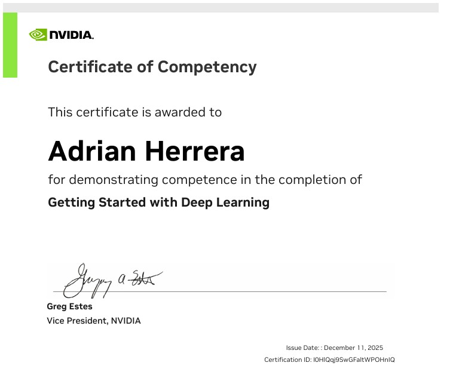

Estudiante de Ingeniería biomédica, Análisis Exploratorio de Datos y Machine Learning con Python.
Soy estudiante de V cuatrimestre de ingeniería biomédica, me interesa el machine learning y la inteligencia artificial aplicada a la robótica, con especial énfasis en soluciones innovadoras para el campo de la ingeniería biomédica. Mi objetivo es integrar algoritmos inteligentes con sistemas robóticos para mejorar el análisis, diagnóstico y asistencia tecnológica en la salud.
(Tarea 3) Análisis Exploratorio de Datos (EDA) y modelado de regresión para predecir los cargos de seguro. Se identificó a **ser fumador** y **la edad** como los principales factores de costos. Este proyecto se centra en el desarrollo de un modelo predictivo de análisis de riesgo financiero orientado al sector de seguros, utilizando el dataset global sobre salud mental y trastornos por uso de sustancias de Kaggle. A través de una exploración exhaustiva de datos, se evalúa la naturaleza de las variables para determinar el enfoque óptimo entre algoritmos de clasificación o regresión, permitiendo estimar el impacto de indicadores de salud pública en los costos de pólizas. Como resultado esperado, se presenta un repositorio estructurado que incluye la limpieza de datos y la identificación de correlaciones críticas, proporcionando una base sólida para el cálculo automatizado de primas de seguro basadas en perfiles de riesgo específicos.
Ver Repositorio de GitHub(Lab 3) Este proyecto culmina la fase de análisis de costos médicos mediante el desarrollo y despliegue de un modelo de aprendizaje supervisado para la predicción de primas de seguros. A través de un proceso de benchmarking técnico, se compararon y tabularon los desempeños de cuatro algoritmos de regresión distintos, evaluando métricas críticas como MSE, RMSE y MAPE. Tras seleccionar el modelo óptimo bajo criterios de precisión y robustez, se realizó un profundo análisis de error para identificar patrones de desviación y mejorar la interpretabilidad de las predicciones. Finalmente, el modelo fue integrado en una interfaz interactiva desarrollada con Streamlit/Gradio, permitiendo que los usuarios finales realicen estimaciones de costos en tiempo real basadas en sus propios datos demográficos y de salud.
Ver Repositorio de GitHub Calcular costo -app streamlitEste es un modelo de análisis de patrones de suño. Aprendizaje Supervisado (Clasificación) mediante la ingeniería de una variable objetivo binaria basada en niveles de estrés. El flujo de trabajo técnico abarca desde la depuración de datos y el tratamiento de valores atípicos mediante el método de rangos intercuartílicos (IQR), hasta un exhaustivo análisis bivariante y de correlación para mitigar la multicolinealidad. Como resultado esperado, se genera un conjunto de datos optimizado y balanceado mediante una estratificación del 80/20, garantizando que el modelo de IA posterior reciba una distribución representativa de las clases (Estrés Moderado vs. Estresado) para un entrenamiento robusto y generalizable.
Ver Repositorio de GitHubEsta fase del proyecto se centra en la implementación de modelos de aprendizaje supervisado para la detección automatizada de niveles de estrés, utilizando el conjunto de datos de hábitos de sueño previamente procesado. A través de un experimento comparativo, se evaluaron cuatro arquitecturas de clasificación, analizando métricas de rendimiento críticas como Precision, Recall, F1-Score y especificidad, además del estudio de la matriz de confusión para identificar falsos positivos y negativos. Tras seleccionar el algoritmo con mejor capacidad de generalización, se realizó un riguroso análisis de error para comprender las limitaciones del modelo en casos atípicos. Como entrega final, se desarrolló una interfaz de usuario interactiva con Streamlit/Gradio, permitiendo a cualquier profesional de la salud consumir el modelo de datos de forma intuitiva para predecir perfiles de estrés en tiempo real.
Ver Repositorio de GitHub Analizar niveles de estrés -app streamlitEste proyecto integra técnicas avanzadas de Machine Learning para la gestión predictiva en salud, utilizando datos globales sobre salud mental y trastornos por uso de sustancias para la estimación de costos de seguros. La metodología abarca desde la evaluación de modelos de regresión y clasificación para determinar primas de riesgo, hasta la implementación de Clustering para segmentar grupos de atención según su estado mental. Mediante la optimización de métricas de inercia y silueta, el modelo identifica perfiles críticos —como pacientes con alta propensión al suicidio o riesgo de mortalidad prematura—, proporcionando a los profesionales médicos una interpretación estadística detallada por cluster. Finalmente, el ecosistema se completa con una interfaz web interactiva que permite el consumo del modelo de datos para la toma de decisiones clínicas y actuariales en tiempo real. Se analiza el cluster de estadísticas referentes a porqué este cluster tiene este comportamiento. ¿qué representa este cluster? ¿Personas con alta probabilidad de suicidio? ¿Personas con alta probabilidad de morir antes de la edad?, etc.
Ver Repositorio de GitHub Analizar probabilidad de muerte/suicidio -app streamlitAnálisis integral de visión artificial centrado en la clasificación binaria de rostros, utilizando una selección curada de las actrices Natalie Portman y Scarlett Johansson. A través de un riguroso proceso de exploración estadística y limpieza de datos, se han estandarizado las variaciones de iluminación y ruido presentes en el dataset original. Como resultado esperado, se entrega un conjunto de datos optimizado, normalizado y potenciado mediante técnicas de Data Augmentation, diseñado para maximizar la precisión de una red neuronal convolucional y garantizar una alta capacidad de generalización en la identificación de rasgos biométricos específicos."
Ver Repositorio de GitHubEste proyecto consiste en el desarrollo e implementación de una red neuronal convolucional basada en la arquitectura VGG16, construida desde cero para la clasificación multiclase del dataset de rostros de celebridades de Kaggle. El flujo de trabajo abarca desde la selección estratégica de hiperparámetros y funciones de pérdida personalizadas, hasta una fase crítica de análisis de error apoyada en matrices de confusión para evaluar el desempeño del modelo. Como resultado final, se integra el modelo entrenado en una interfaz web funcional, permitiendo el consumo de predicciones en tiempo real y demostrando la viabilidad de desplegar soluciones de aprendizaje profundo en entornos de producción accesibles para el usuario.
Ver Repositorio de GitHubEl presente proyecto se enfocó en el desarrollo de un sistema de Detección de Objetos aplicado al análisis de tomas aéreas de vehículos, utilizando el dataset aerial-cars-dataset. La fase inicial consistió en el análisis del formato de anotación YOLOv3 y el preprocesamiento del dataset, incluyendo el conteo de instancias de vehículos y la división en conjuntos de entrenamiento y prueba. Posteriormente, se implementó la arquitectura YOLOv8 para el entrenamiento del modelo.
Ver Repositorio de GitHubimplementación de la técnica de Transfer Learning para abordar un problema de clasificación de imágenes en el dataset de Razas de Perros. Este enfoque consistió en la reutilización de una Red Neuronal Convolucional (CNN) previamente entrenada en un vasto dataset (ImageNet), congelando sus capas convolucionales para preservar el conocimiento de características genéricas y añadiendo un nuevo cabezal de clasificación adaptado.
Ver Repositorio de GitHub
Breve descripción de tu segundo mejor proyecto (ej. Clasificación de flores, análisis de ventas, etc.).
Ver Repositorio de GitHubBreve descripción de tu segundo mejor proyecto (ej. Clasificación de flores, análisis de ventas, etc.).
Ver Repositorio de GitHubBreve descripción de tu segundo mejor proyecto (ej. Clasificación de flores, análisis de ventas, etc.).
Ver Repositorio de GitHub